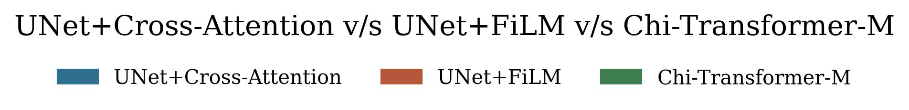
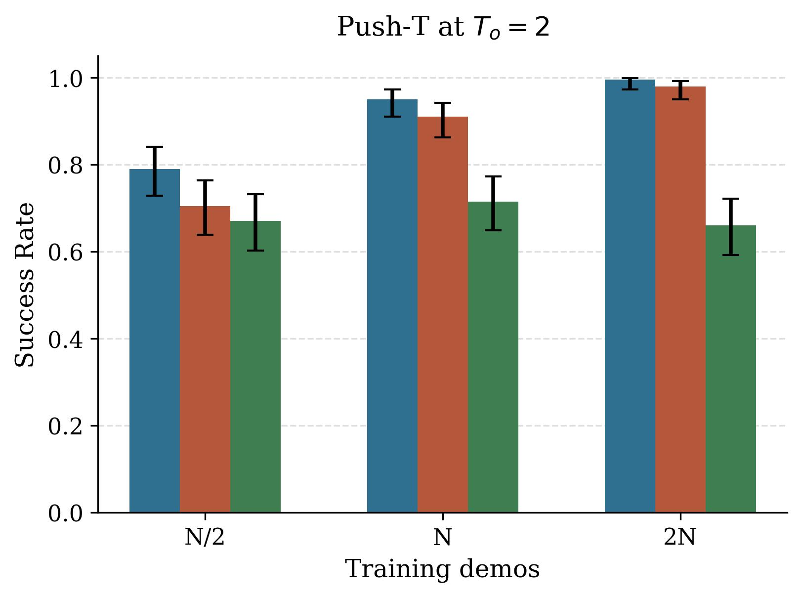
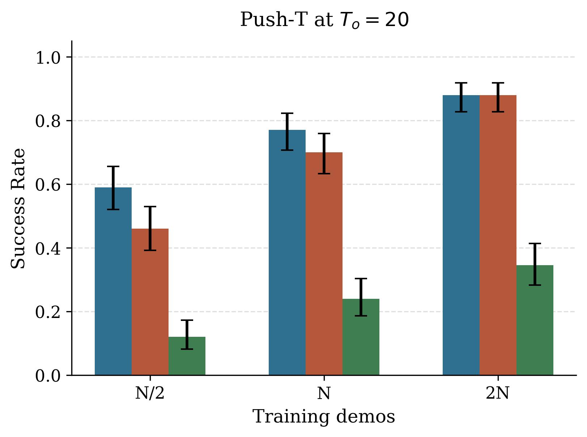
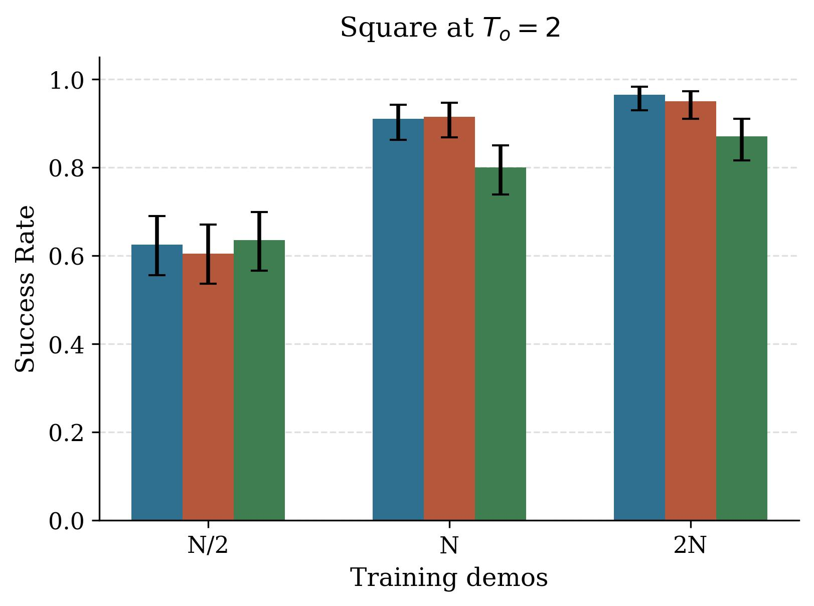
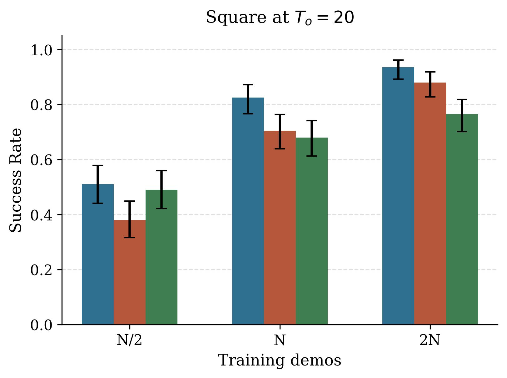
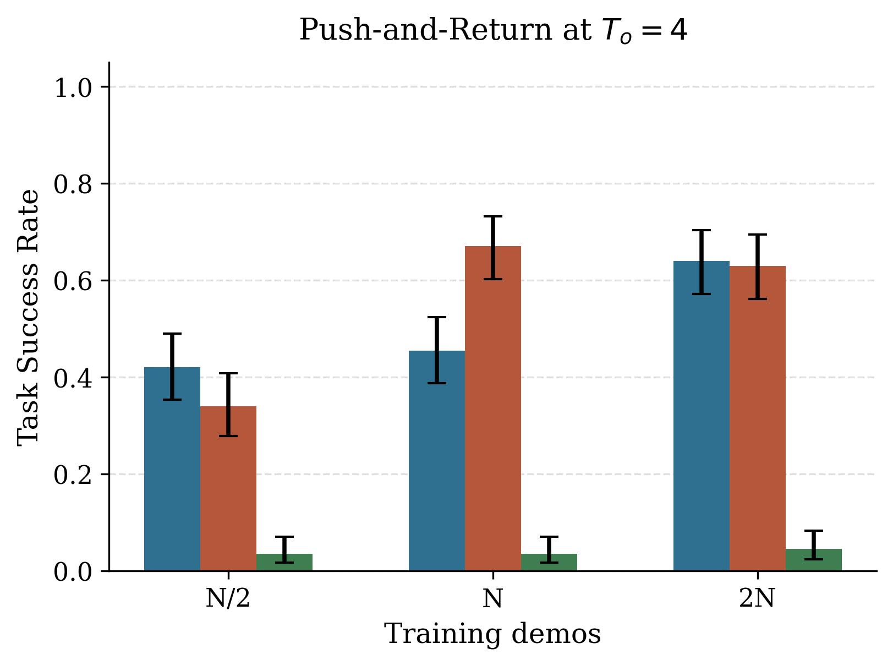
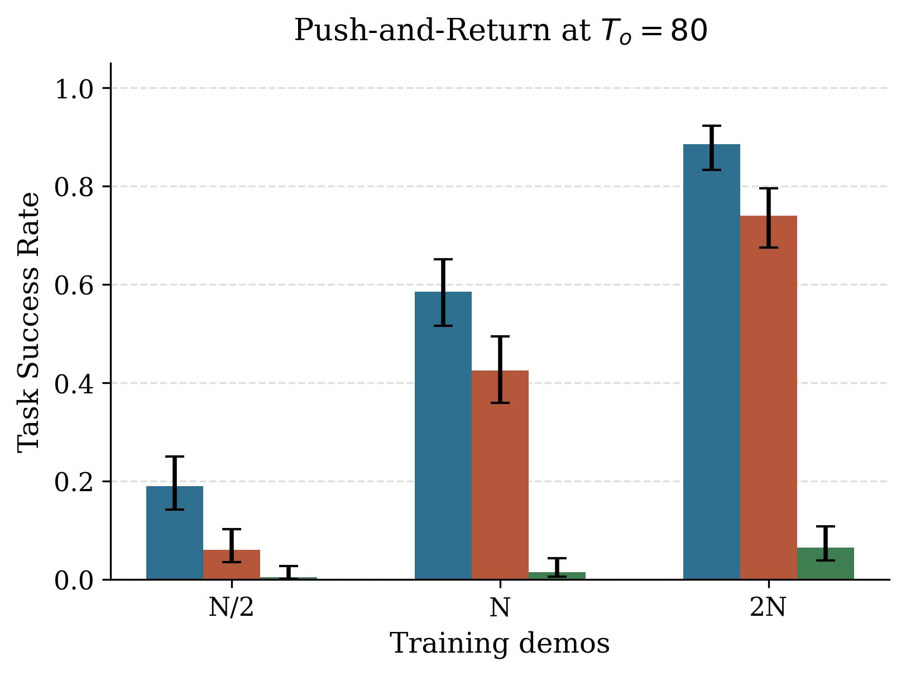
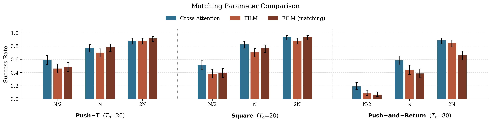

In the main paper we establish the importance of architectural choice when comparing diffusion policy performance, especially at longer context lengths. Here we present additional results organized by different data scales and at both short and long context lengths in Figure 1. While Chi-Transformer-M shows no noticeable performance gain even in the high data regime, the performance gap between UNet+Cross-Attention and UNet+FiLM shrinks as data is scaled. This reinforces the notion that the cross-attention conditioning method is a favorable inductive bias for the UNets, which are already known to perform well for single task image based policies.
A particularly interesting thing to note in Figure 1 is that Chi-Transformer-M shows a significant drop in performance as context length is increased from short to long. This drop is less stark in UNet+FiLM and least prominant in UNet+Cross-Attention. In the high data regime, the performance gap between context lengths is negligible for UNet+Cross-Attention especially in the high data regime.







Additionally, the FiLM model size can be considerably different if context length is changed, while the UNet+Cross-Attention policy is consistently at around 150M parameters. Thus, it could be particularly concerning that one comparison we have made is at context length 80, where we compared UNet+FiLM with about 235M parameters against UNet+Cross-Attention at 151M parameters.
The comparison presented in Figure 1 is such that the parameters in the intermediate layers of the UNet are kept consistent between FiLM and cross-attention conditioning. That is, we study what conditioning method is best for a given UNet of certain hyperparameters. However, we now present a second comparison where we alter the size of the UNet layers to keep the total number of parameters consistent with UNet+Cross-Attention at a given context length. We present results in Figure 2. Note that we added parameters for push-T and square at To=20, and removed parameters for push-and-return at To=80, to bring the total parameters similar to those of cross-attention conditioning. We find no changes across tasks in the N/2 data regime.
